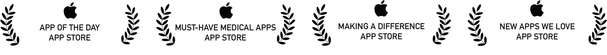

0%
Home
About
Technology
Contact
Scroll
DOSES AI
ARE
DEVELOPING
THE
NEXT-GEN
AUTONOMOUS
PHARMACY
WITH
AI
AND
ROBOTICS
WE
BELIEVE
PREVIOUSLY
UNIMAGINABLE
AUTONOMOUS
SYSTEMS
ARE
NOW POSSIBLE
WITH
THE
ADVANCEMENT
OF
OPEN SOURCE
LARGE
LANGUAGE
MODELS
SUCH
AS
META'S
LLAMA MODELS
,
AND
OPEN SOURCE ROBOTICS.
FOUNDED
BY
MALIK AHMED
,
AI RESEARCHER
AT
STANFORD
/
IMPERIAL
,
PHARMACIST
,
AND
META AI HACKATHON WINNER
,
DOSES
AI
HAS
THE
VISION
OF
A
NEAR
FUTURE
WHERE
A
SINGLE
ON-SITE
CHIEF PHARMACIST
CAN
HANDLE
A
BUSY
PHARMACY
WITH
EASE
SUPPORTED
ENTIRELY
BY
ADVANCED ROBOTICS
AND
AI.

Your browser does not support the video tag.
OUR
APPLE-AWARD
WINNING
MEDICATION
TRACKING
APP,
DOSES
(FORMERLY
"DOSEWOLF"
)
CLOSES
THE
LOOP
BETWEEN
PATIENT,
PHARMACIST
AND
DOCTOR,
THROUGH
REAL-TIME
ADHERENCE
TRACKING
AND
PRESCRIPTION
DELIVERY.
OUR
ON-PREMISES
LLMS
ENHANCE
DATA
PRIVACY,
OPERATIONAL
EFFICIENCY
AND
SCALABILITY,
AS
DEMONSTRATED
IN
OUR
AWARD-WINNING
SOLUTION
AT
THE
META
LLAMA
LONDON
HACKATHON.
Basic Layout Test (outside any section)
This is test text
This is a very basic layout test with minimal styling to diagnose the issue.
LET'S
CHAT
MALIK@DOSES.AI
© DOSES AI LIMITED 2025